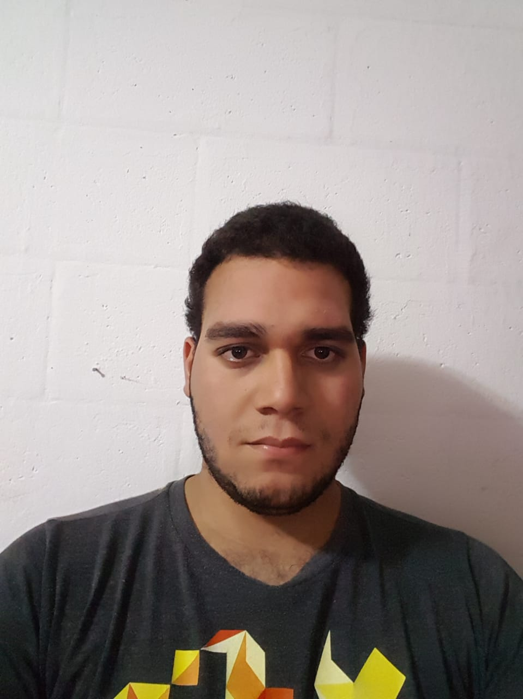

Curriculum Vitae
Datos Personales:
- Nombre: Ruben Aristides Valencia Alvarado
- Carnet: 00181317
- Año de Estudio: 3° año
- Carrera: Ingenieria Informatica
- Correo: 00181317@uca.edu.sv
- Github:
Menu
Curriculum Vitae
- Estudiante de ingeniería informática
- Me considero como una persona capaz de hacer los trabajos que se me pidan
- Muy cooperativo y puedo trabajar en equipo
- Dispuesto a expandir mis conocimientos
- Muy comprensivo y me gusta analizar las situaciones
- Tengo experiencia laboral en el área de reparación de dispositivos
- He trabajado en ventas y reparación de dispositivos móviles
- Participe en una competencia de robótica y de creación de aplicaciones
- Tengo experiencia haciendo trabajos físicos
Mi objetivo es expandir mis conocimientos y aprender de todo para así ser mejor en mi trabajo, mejorar mi experiencia laboral en la rama de la informática y crear programas para mejorar la enseñanza de nuevos temas para que asi todos esten informados de lo que pasa en el mundo y sepan que hacer con sus problemas.